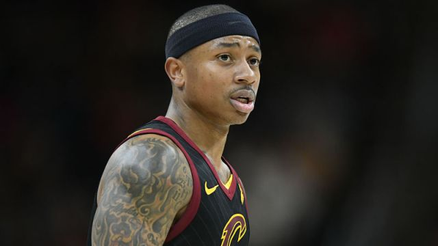
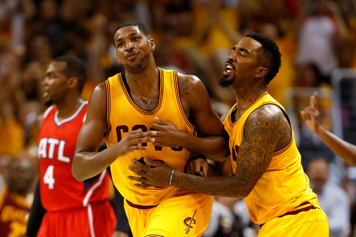
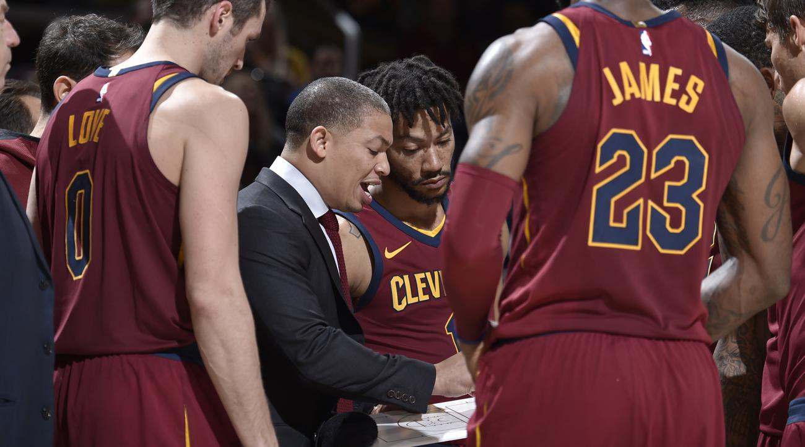
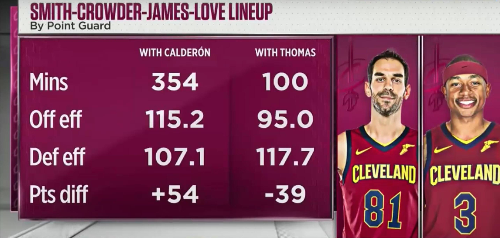
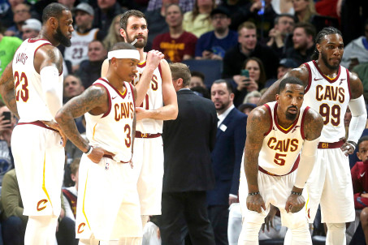

      <div class="post-size">

      <div class="w3-light-blue w3-light-grey w3-margin w3-padding-large">
        <div class="w3-center">
          <h3>Cavs in Chaos: What's with the Cavaliers Mid-Season Decline?</h3>
          <h5><span class="w3-opacity">Jan 26, 2018</span></h5>
        </div>

        <div class="w3-justify">
          <p>The Cavaliers have declined at a historic rate; losing 9 of their 13 last games and leaving them far from the top of the Eastern Conference with a 27-19 record. This mid-season slump is no stranger to the Cavaliers, as this phenomenon has occured in the past few seasons as well, which all ended with a NBA Finals berth for the team. Pundits across the sports nation have seen this particular slump as something different, though, as the Cavs are deteriorating on the court and off. The numbers being put up against the team are historic, and there are a multitude of factors contributing to their current downfall, some obvious, but many surprising.</p>
          <h4>Living with IT</h4>
          
          <p>Much of the Cavaliers torid form has occurred in the month of January, which coincidentally, has coincided with the long awaited return of former Celtics point-guard Isaiah Thomas. The Cavaliers sat around the same position in the conference when IT joined the starting line-up, so people thought his scoring habits would be enough to put the Cavs on an upward trajectory. Unfortunately, though, ever since his integration into the team, their form has gotten worse and worse. It is not that he is underperforming at some extraordinary level. He is averaging roughly 16 points per game, far from his 29 last season, but still some pretty good numbers considering he has been out of the game for roughly half a year. The problem is two-fold; he can't play defense, and he is taking up a spot on the line-up for players who can.</p>
          <p> I'll expand more on this when we get down to questionable starting line-up choices, but it's unfortunate that the 5 foot 9 guard, combined with Kevin Love and some other questionable defensive players, start the game day in and day out. The Cavs already had a questionable defense in past seasons, but it has accentuated even more this month of January. The Cavaliers have let up over 120 points in three of the losses in the past month, and rank 23rd in general defense across the whole NBA in the month of January. This is especially alarming, though, as they ranked 7th through the whole season before-hand. The Cavaliers need to learn how to play defense when IT is in the starting line-up, or restrict IT or other defensive liabilities to the second unit. Of course, there is always a transition period when a new player joins the line-up, and it will take time for a team to adjust. But it is important that IT and his teammates do not remain frustrated with each other during this transitional period.</p>
          <h4>Underperforming Stars</h4>
          
          <p>The Cavaliers line-up has not had many major changes in line-up from past years besides the loss of Kyrie and the acquisition of Isaiah Thomas. Players like JR Smith and Tristan Thompson, who performed admirably in the past seasons, have not been enjoying the same glory the usually do. Both are down in points per game from the past season, contributing to the less-talked about offensive struggles the Cavs are unfortunately sporting this month. The Cavs boast the same ranking in scoring this month as they do in defense, 23rd in the NBA as a whole. Sporting offensive stars such as Lebron James, JR Smith, Kevin Love, Tristan Thompson, and more, the Cavaliers should not be this low in scoring. There's a large amount of talk about the atrocious interior defense the Cavs are playing, but it should not overshadow the fact that they are playing just as bad when attacking the net too. Moving to the defensive side, both Jae Crowder and JR Smith have not been living up to their defensive billing. Moreover, ever since his return, Tristan Thompson is also having too many nights to forget on the defensive end. The players are just not performing up to their expectations, and something needs to be done here. The drop-off of the form of specific stars must be evaluated and taken very seriously if the Cavs have any chance of picking themselves off before the post-season.</p>
          <h4>Questionable Line-Up Choices</h4>
          
          <p>It took the 9th loss in the last 13 games, the one against the Spurs, for coach Ty Lue to finally admit he must make changes to the starting line-up. This is something every Cavs fan should have been saying for the past few weeks. The current starting line-up is Jae Crowder, JR Smith, Lebron James , Kevin Love, and Isaiah Thomas, with Derrick Rose inching his way forward since his return as well. Each of these individuals is a big name player, who should be performing at a very high level. We can talk about the lack of defense in this line-up for as long as we want, but with Crowder, JR, and Lebron present, this team should theoretically be performing well. But they are not. Why do they keep getting played, then? </p>
          <p>The unfortunate answer is because they are big name players. Ty Lue is too scared to bench a big name player in favor of other players who have been performing admirably throughout the season before IT came into the picture. Kyle Korver has not been getting the minutes he deserves as the teams top 3-point converter, nor is he getting the looks he needs to knock them down. Korver is a one-dimensional player, but his work at the 3-point line is necessary for the Cavs to succeed. Moreover, Channing Frye and Jose Calderon looked great and helped the Cavs throughout the month of November when Tristan Thompson was out injured. When the second unit contained the three aforementioned players, they where consistently outplaying the starters. To go even further, in almost all of the top scoring line-ups for the Cavs, either Korver or Frye was present. The combination of Korver, Frye, and Lebron on the court puts up an impressive amount of numbers, even though both Korver and Frye only offer a few dimensions as players. They allow other star players, like Lebron, to thrive and do what he does best; score points and win basketball games. Now, though, they are barely even getting minutes in the second unit.</p>
          

          <p>Some big names on the Cavs (particularly JR Smith, Jae Crowder, and Tristan Thompson) are not performing, while players like Korver, Calderon, and Frye seem like a much better fit for what the team needs. Ty Lue needs to bench players who have, in previous seasons, done great for the Cavs, but just are not cutting it anymore. Let's hope he follows through with his promise of shaking up the line-up for the sake of their season. </p>

          <h4>Lack of Effort and Lack of Belief</h4>
          
          <p>News has been spreading about team talks and emotions boiling over for the Cavs. On Monday, the team held a talk and anger was directed towards Kevin Love, a player who has consistently been playing well, was selected as an All-Star, and changed his position to best suit the team. The Cavs players are desperately looking for someone to blame, but they should look no further then themselves.</p>
          <p>The lack of effort, especially on defense, has been apparent. Especially in their lost to the Spurs, you could see that when the Cavs lost the ball, there would consistently be 2-3 of their players behind the ball making no real effort to get back and defend. This can't happen, especially against a team like the Spurs. A lot of this is probably due to a lack of belief in their coach and the whole game plan. Both JR Smith and Isaiah Thomas have alluded to this possibility, but this is no excuse. The players need to keep faith in the system in order to play their best game. </p>
          <p> Lastly, the players need to have faith in each other. Ever since Isaiah Thomas has returned, you can see a sense of frustration whenever he plays and his team lets up on the defensive end. Moreover, Lebron seems to have just given up as he watches his team lose game after game. Everyone looks angry, and reports of players being frustrated with IT, the coaching staff, and pretty much everyone on the team are flooding the sports news everyday recently.</p>
           <p>Whether it be Ty Lue, Lebron James, or some other figure, someone needs to pick the Cavs back up, reunite the team, and re-engergize their performances in order to salvage the year. </p>
          <p class="w3-clear"></p>
          <div class="w3-row w3-margin-bottom" id="demo1" style="display:none">
            <hr>
              <div class="w3-col l2 m3">
              </div> 
          </div>
        </div>
      </div>
    </div>